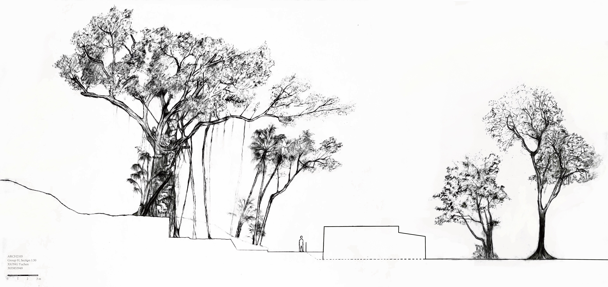

About Me
"Hi, I'm Yuchen Xiong, a landscape architect. I specialize in creating beautiful and functional landscapes. I'm interested in heritage conservation, rural revival, ecological design."
Education
- High School Affiliated to Nanjing Normal University（南师附中） — IB Diploma Programme
- The University of Hong Kong（香港大学） — Bachelor of Arts in Landscape Studies (BALS)
- UC Berkeley（加州大学伯克利分校） — Master of Landscape Architecture (MLA)
Studio Projects
Revealing the Water

01 Revealing the Water
Instructor: Echeverri Natalia, Ng Sylvia
Date: 2023-24 (Fall)
Located in Sham Shek Tsuen, an abandoned agricultural village in North
Lantau, "Revealing the Water" transforms a singular, linear waterway
into a network of meandering streams. Here, the artificial relics dance
in harmony with the spontaneous choreography of nature. Through
"Revealing the Water", the abandoned orchard is revived, and the revealed
water performed scenarios that include an ecological wet island and a
set of water routes interacting with sands and fishery relics. The project
has turned this quiet, forgotten rural place into a vibrant destination for
visitors and locals alike.
Emerging Wetland

02 Emerging Wetland
Instructor: Irene Curulli
Date: 2024-25 (During exchange in Virginia Tech)
As climate change accelerates, rising sea levels around Virginia Beach
pose both a challenge and an opportunity. "Emerging Wetland" embraces
this shift, converting agricultural land near the North Landing River into
a dynamic ecological experience and environmental education center.
A network of meandering boardwalks along the river's edge leads
visitors through various emerging wetland types, marking today's
boundaries and revealing the impact of shifting water levels over time.
Visitors begin in the dry, forested landscape, then journey through a
lakeside picnic area, witnessing the gradual encroachment of water
on farmland until reaching fully developed wetlands. The experience
concludes at an education center, where visitors can learn more about
these transforming ecosystems and their future.
Alternative Boundary

03 Alternative Boundary
Instructor: Trumpf Susanne Elisabeth, Ettel Nikolas
Date: 2023-24 (Spring)
"Alternative Boundary" integrates water within the urban fabric of Tseung
Kwan O, a newly developed reclaimed urban area. My urban strategy includes
two major stripes, the long vertical stripe running through the middle, and the
curved stripe along the periphery. These two stripes are the "breathed" areas
within the city, serving a dual purpose: effectively managing waterlogging
in urban areas by guiding water to the sea, while also creating an enriching
journey for individuals, particularly the community, to traverse from the dense
urban core to the ecological shores.
This innovative approach not only enhances urban life but also exemplifies
the potential of landscape architecture to solve complex urban challenges,
pushing the original rigid boundaries to create “Alternative Boundary” for
people living in a super artificial urban fabric.
BALS Thesis
Road ecology in Zomia's last frontier


04 Road ecology in Zomia's last frontier
Instructor: Ashley Scott Kelly
Date: 2024-25 (Spring)
This project examines how two state-led mega-infrastructure projects in northern Thailand—the Yuam
Water Diversion Tunnel and the Transmission Line Project—spatially overlap to transform remote
landscapes and disrupt long-standing community connectivity. By imposing new access roads, these mega
infrasturcture projects will significantly increase regional accessibility and shorten travel times between rural
areas and outside world. Yet, in doing so, they profoundly alter existing patterns of land use, ecological
systems, and socio-cultural linkages, particularly within Karen highland communities.
Internship Works
Kuk Po Vision
Institution: HKU CCAU Lab
Supervisor: Prof. Wong Wei Jen


Lantau Vision
Institution: HKU CCAU Lab
Supervisor: Prof. Wong Wei Jen


Other Works
Beautiful Hand-drawing Trees
RainBasin Playground

Flooding Risk Assessment

Contact Me
The projects above are just a selection from my portfolio. If you're interested in collaborating, exploring the full set of works, or simply want to connect — feel free to reach out!
- Email: xyciel@foxmail.com
- LinkedIn: Yuchen Xiong